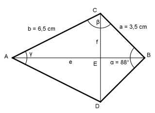

Aufgabe 52 Wie groß sind die Diagonalen e, f und der Winkel β des Drachens?

Die beiden Diagonalen e und f stehen denkrecht aufeinander. e halbiert die Winkel. Im Dreieck EBC: f/2 sin α/2 = ----- |*a a sin α/2 * a = f/2 | *2 f = 2 * sin α/2 * a = 2 * 3,5 cm * 0,6947 = 4,9 cm Im Dreieck AEC: f/2 4,9/2 cm sin γ/2 = ------ = ------------ = 0,3769 b 6,5 cm --> γ/2 = 22,1° Im Dreieck ABC: β = 180° - α/2 – γ/2 = 180° - 44° - 22,1° = 113,9° Im Dreieck AEC: EB cos γ/2 = ------ |*a a cos γ/2 * a = EB EB = cos γ/2 * a = 3,5 cm * 0,7193 = 2,5 cm Im Dreieck EBC: AE cos α/2 = ------ |*b b cos α/2 * b = AE AE = cos α/2 * b = 6,5 cm * 0,9265 = 6 cm e = EB + AE = 2,5 cm + 6 cm = 8,5 cm